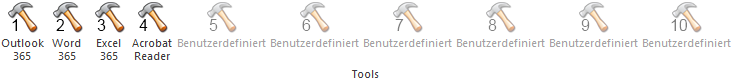

Mit Hilfe des Tools-Bereichs können Fremdprogramme gestartet werden. Die Definition der Fremdprogramme erfolgt über das Fenster "Externe Programme…" (WinLine START - Applikationen - Externe Programme…).